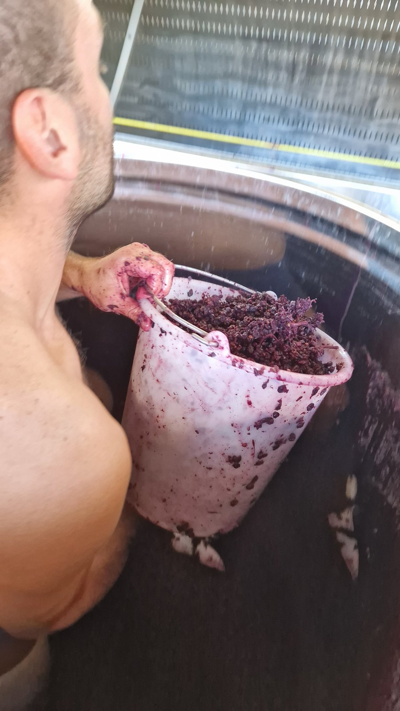

Guillaume l'Échanson
Sommelier de formation, vigneron de conviction.
Guillaume l'Échanson est un ancien sommelier devenu vigneron et négociant-vinificateur en Bourgogne — un parcours de goûteur curieux, passé de l'autre côté du verre.
Les débuts — La Tour d'Argent
C'est lors de sa formation de sommelier à la prestigieuse Tour d'Argent, entre 2008 et 2010, que Guillaume découvre sa passion pour le vin.
Sommelier globe-trotter
Il travaille ensuite comme sommelier et voyage dans de nombreuses régions du monde : l'Australie, les Seychelles, Bora-Bora, la Corse et Saint-Barthélemy façonnent son regard sur le vin et le service.
L'apprentissage du vin
Guillaume se forme ensuite auprès de grands domaines et vignerons : le Domaine de Montille en Bourgogne, Face B, WasenHaus en Allemagne, Millton Vineyards en Nouvelle-Zélande, et le Domaine Saint-Nicolas. Il obtient un BTS en viticulture et œnologie biologique en 2021.
L'installation
Après des vinifications chez Vin Noé, il lance sa propre production, avec un premier millésime officiel en 2024, depuis une cave partagée à Chassagne-Montrachet.
[Une phrase de Guillaume sur sa vision du vin — citation à insérer]
Le travail à la vigne et au chai, jour après jour, se suit sur Instagram.
@the_wine_nomad ↗